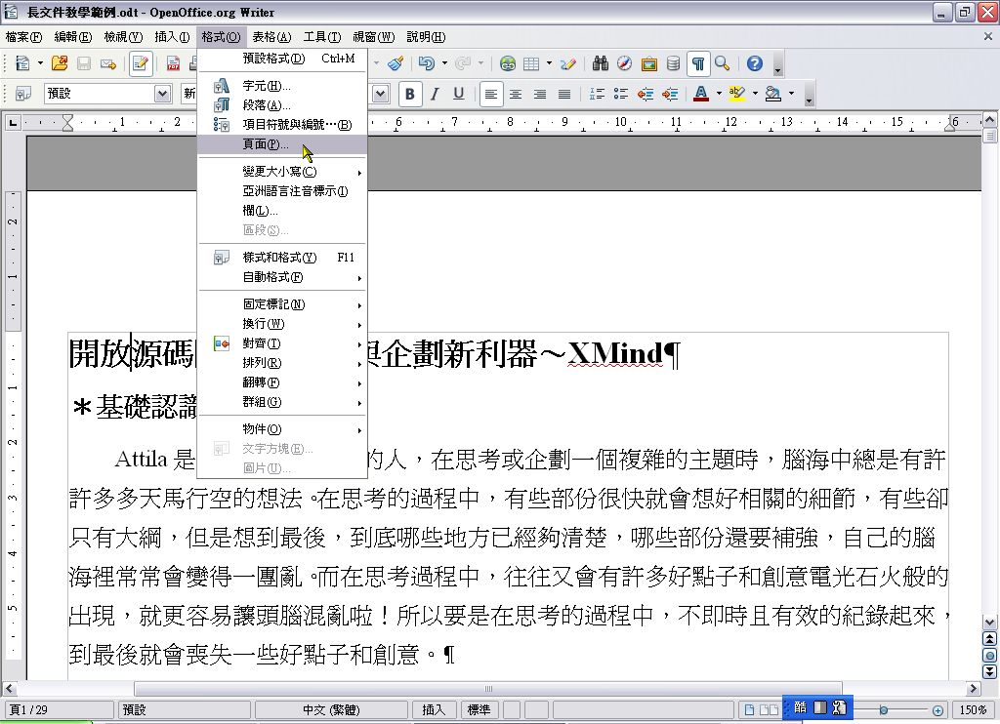
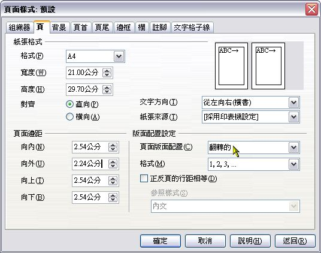
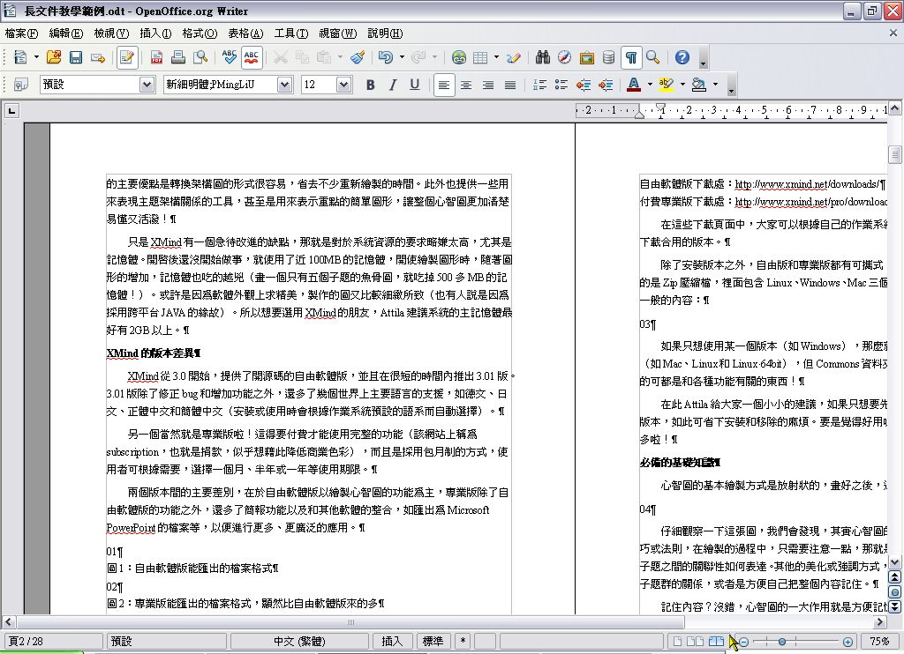
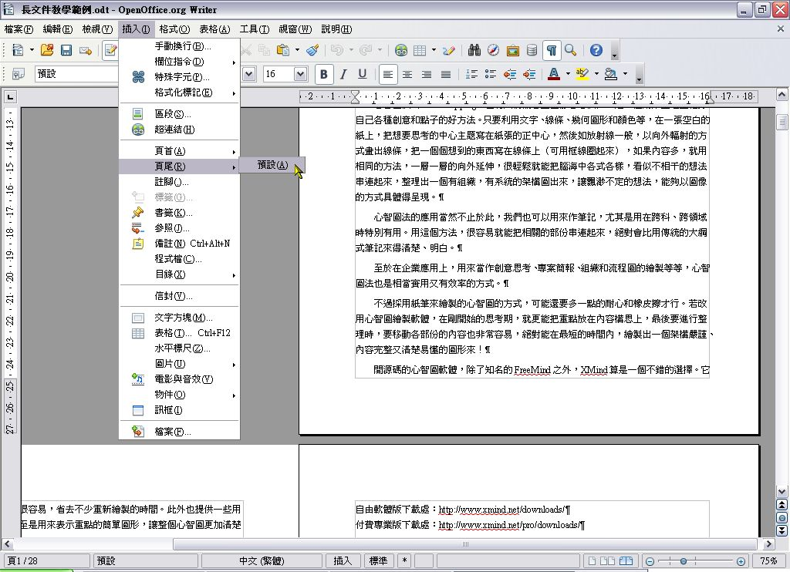
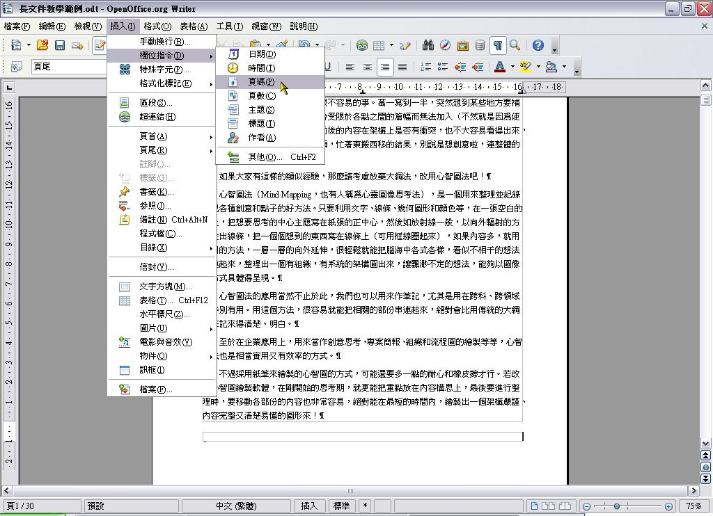
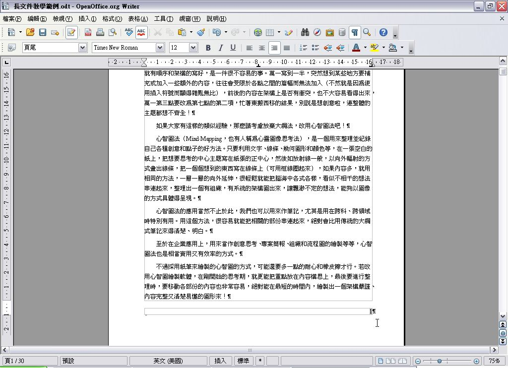
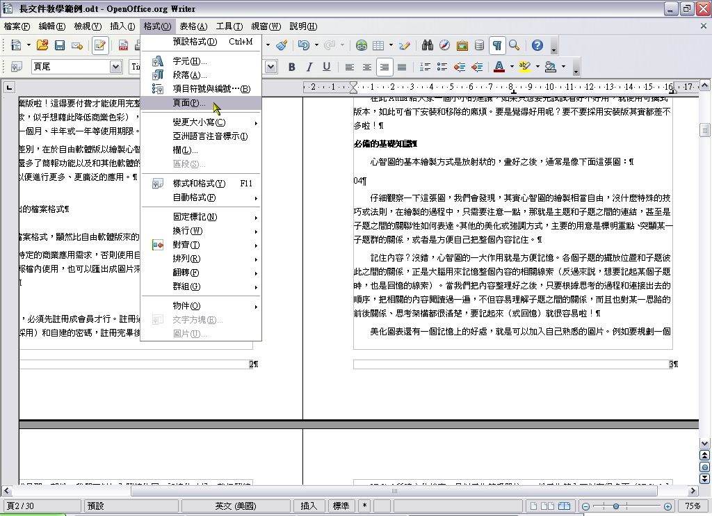
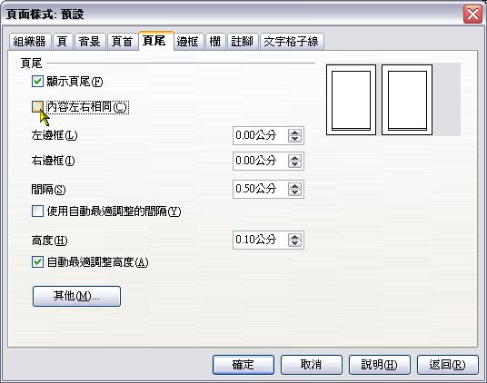
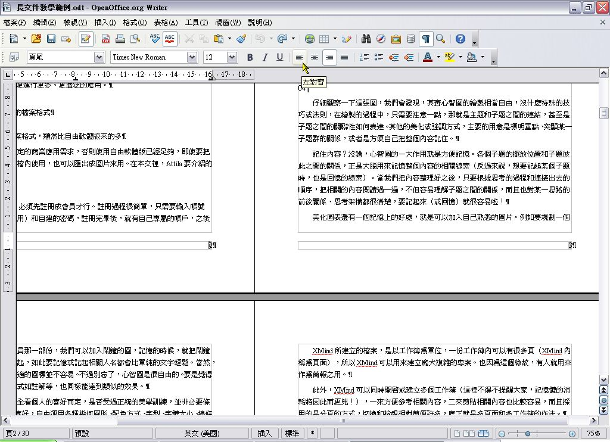
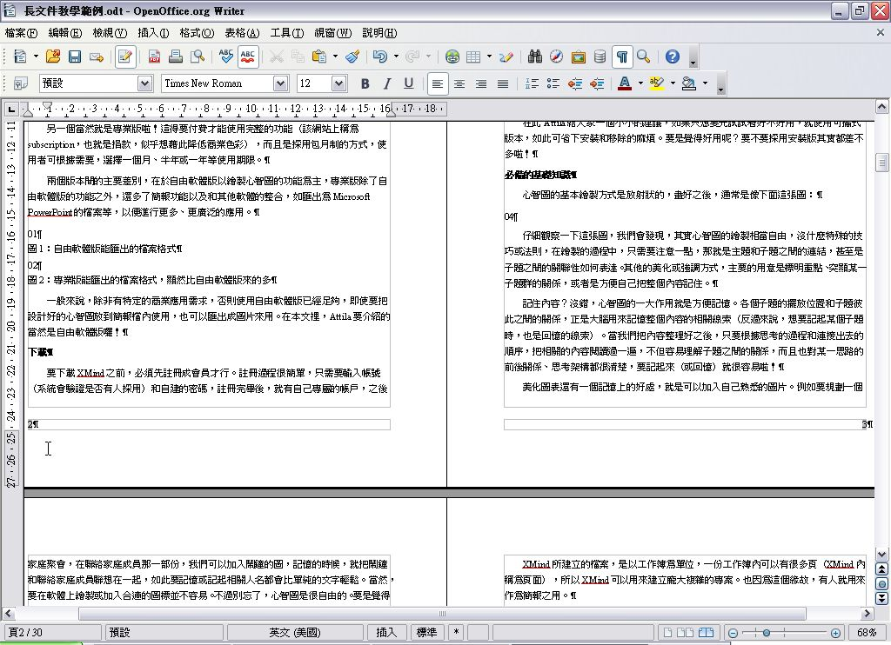

也紀念我們永遠的朋友 李士傑先生（Shih-Chieh Ilya Li）。
淺談長文件的製作～以 Writer 為例 (2)
＊頁面設定與頁碼製作篇＊
頁面的設定
步驟一：

以 OpenOffice.org Writer 開啟要編輯的文件後，按功能表的「格式」＼「頁面」。
步驟二：

切換到「頁」標籤，接著在右下方的「版面配置設定」區塊內，把「頁面版面配置」改為「翻轉的」，接著把左邊「頁面邊距」區塊內的「向外」，改為 2.24 公分（比「向內」少 0.3 公分）。
這裡要說明一下頁面版面配置的「翻轉的」是什麼意思。它的意思是要把頁面設定為裝訂後的翻頁型態，也就是像翻開書本一樣。Attila 認為此處翻譯為「翻轉的」實在是很難讓人瞭解是什麼意思，改為「書籍對頁」可能會比較好一點。
至於頁面邊距的設定，是要讓頁面的外緣要比內緣少 3 mm（所以是「向外」比「向內」少 3 mm），這樣子在裝訂之後，內、外緣和本文的距離才會一樣。
步驟三：

在右下角的「檢視版面配置」，按二下「書籍模式」，然後縮小檢視比例，切換到第二頁以後，我們會看到頁的外緣比內緣還窄，二者之間的差距，正是用來作為裝訂之用的。
頁尾和加入頁碼的設定
步驟一：

通常頁碼不會加在內文裡面，而是加在頁尾（或頁首）。OpenOffice.org Writer的頁尾是需要額外加入的，所以想要加入頁碼，得先加入頁尾。
要加入頁尾，就按功能表的「插入」＼「頁尾」＼「預設」。
步驟二：
此時頁面的下方會多出一個空白區塊，這就是頁尾。我們把插入點移到這裡來，然後按標準工具列上的「右對齊」鈕。
步驟三：

按功能表的「插入」＼「欄位指令」＼「頁碼」。
步驟四：

頁碼就會加入到頁尾的右邊。
步驟五：

一樣把檢視模式改為「書籍模式」，然後切換到第二頁以後，我們會發現，第二頁和第三頁的頁碼都在該頁的右邊，如果採用雙面列印後裝訂起來，第二頁的頁碼就被遮住了，因此我們必須讓左右頁的頁碼設定為不同邊。
首先，按一下功能表的「格式」＼「頁面」。
步驟六：

在開啟的「頁面樣式」視窗內，我們切換到「頁尾」標籤，取消勾選「內容左右相同」後，按一下「確定」。
步驟七：

接著把插入點移到第二頁的頁尾，然後按標準工具列的「左對齊」鈕。
步驟八：
第二頁的頁碼就會向左對齊，並且和第三頁的頁碼為對稱位置。如此裝訂的時候就不會被遮住了。至於後面其他頁面的頁碼呢？當然會自動跟著變更囉！所有偶數頁的頁碼一樣都在左邊，奇數頁的則在右邊。
（待續）
You may be interested in the following articles:
- 淺談長文件的製作～以 Writer 為例 (4) - 2009-06-26
- 淺談長文件的製作～以 Writer 為例 (3) - 2009-06-12
- 淺談長文件的製作～以 Writer 為例 (1) - 2009-05-05
Special


Address：No.128, Sec.2, Academia Rd., Institute of Information Science, Academia Sinica, Nangang District, Taipei City 11529, Taiwan (R.O.C).
Privacy Policy. Terms-of-use